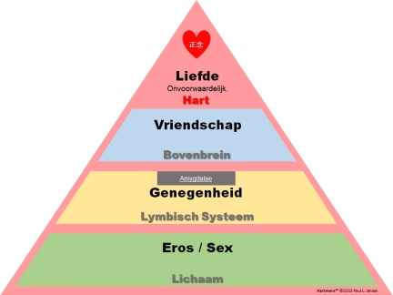

Volgens Van Dale is Liefde:
lief·de (de; v; meervoud: liefdes,
liefden)
-
1 warme genegenheid: tussen die twee was het liefde op het eerste
gezicht bij de eerste ontmoeting; (de) liefde bedrijven seks
hebben
-
2 oprechte en warme belangstelling; het prijs stellen op: liefde
voor de kunst
-
3 voorwerp van liefde: zijn eerste liefde
Volgens de Wikipedia betekent Liefde: "… de
diepe genegenheid voor, welgezindheid tot of toewijding voor een
ander; soms ook voor een dier, zaak of voorwerp. De betekenissen
die er aan gegeven worden zijn sterk cultureel en maatschappelijk
geïnspireerd." Verder legt de Wikipedia veel uit over 'soorten
liefde' en vooral ook de (wetenschappelijke) link tussen chemische
reacties in de hersenen en liefde/verliefdheid.
C.S. Lewis schreef in 1960 een boek met de titel
"The Four Loves" (de vier soorten liefde) en baseert deze
vierdeligheid op de vier woorden die de Griekse taal voor liefde
kent: Storge, Philia, Eros en Agape ofwel genegenheid, vriendschap,
eros/romantiek en onvoorwaardelijke liefde, ook wel liefdadigheid
genoemd. Voor Hartmensen is er echter slechts één
Onvoorwaardelijke Liefde, en is elke andere 'vorm van liefde'
gericht op, en beperkt tot, een bepaald niveau, zoals sex (liefde
bedrijven) zich voornamelijk richt op het lichamelijke niveau 1.
Maar het is voor Hartmensen een uiting van dezelfde
onvoorwaardelijke liefde.

Voor Hartmensen zal een bepaalde omschrijving van
Liefde altijd worden bezien vanuit de holistische perceptie van
Liefde, die dus onvoorwaardelijk is. En hier speelt zich, op deze
bladzijde, het grote debacle tussen Hartmensen en Hoofdmensen af:
de beschrijving (concept) is niet wat wordt beschreven (perceptie),
en hier probeer ik dus de objectieve perceptuele Liefde te
beschrijven in termen die een subjectief conceptueel Hoofdmens zou
kunnen begrijpen. En dat kan dus per definitie niet.
Er is echter een beschrijving van Liefde waarvan
ik denk dat 'zelfs' Hoofdmensen er iets mee kunnen, zelfs meer mee
kunnen dan met een rationele en 'wetenschappelijke' beschrijving.
Ik kan dat echter per
definitie niet
bepalen, dus ik laat deze intrigerende beschrijving gewoon volgen,
en ik laat het verder geheel aan u: “Liefde is geduld en goedheid. Liefde kent geen
jaloezie, kent geen leeg en oppervlakkig vertoon en kent geen
arrogantie. Liefde is niet grof en niet egoïstisch. Liefde
laat zich niet boos maken en liefde rekent het kwaad niet aan.
Liefde verheugt zich niet over onrecht maar vindt vreugde in de
waarheid. Liefde verdraagt alles, liefde gelooft alles, liefde
hoopt alles, liefde volhardt in alles. Liefde zal nooit
vergaan.” (Bewerkt
naar ~1Kor13, 4-8)
Voor hier 'moet' u het maar doen met deze
conceptuele(!) beschrijving van Liefde zoals Hartmensen deze,
volgens mij, ervaren(!). En in hun gedrag uitdragen en
tonen.